P3-L：基础重建已建立，可信 FULL posterior 仍未建立
RUNNING · 2026-10-22T10:59:41.847792+00:00
当前边界
本页只呈现已经落盘的证据。9 组 FULL 参考诊断中，9 组未合格；当前没有可用于 posterior distillation 的 teacher。后续作业与最终科学审查仍在进行，本页不自动生成最终 GO / NO-GO。
保持原 P1 的 64 Gaussian 场系数、2 uniform 属性与二维 scalar-TM/VIE。SLICE、PROFILE、Gaussian reference 和 FULL posterior 的含义分别保留。
费用来自资源快照
快照 sequence 1872427；活动 wall reservation {"surrogate_force_linear_DEV030_c0": 7200.0, "render_locked_risk_checkpoint": 600.0}。拒绝、失败与内存中断费用不删除。快照不等同于进程存活检查。
小型账本快照FULL 参考：接受率不能替代混合
门槛为 Rhat<1.01，材料函数 bulk/tail ESS≥1000，完整网格材料均值 RMS MCSE≤0.001；即使通过同机制门槛，仍需独立机制核验。UNASSESSED 常数分量保留，不能填作 ESS 无限大。
| 机制 / 对象 | 材料 Rhat 最大 | bulk ESS 最小 | tail ESS 最小 | 材料均值 RMS MCSE | 资格 |
|---|---|---|---|---|---|
| A/DEV_000/mala | 3.2009 | 4.4545 | 1 | 0.055655 | UNQUALIFIED_WITHIN_MECHANISM_DIAGNOSTICS |
| A/DEV_028/mala | 5.3921 | 4.176 | UNASSESSED | 0.10516 | UNQUALIFIED_WITHIN_MECHANISM_DIAGNOSTICS |
| A/DEV_030/ess_mode | UNASSESSED | UNASSESSED | UNASSESSED | 0.011401 | UNQUALIFIED_WITHIN_MECHANISM_DIAGNOSTICS |
| A/DEV_030/hmc_pilot | 1.2697 | 11.475 | 23.491 | 0.010152 | UNQUALIFIED_WITHIN_MECHANISM_DIAGNOSTICS |
| A/DEV_030/mala_mode | 1.9299 | 5.5552 | 8.2855 | 0.018282 | UNQUALIFIED_WITHIN_MECHANISM_DIAGNOSTICS |
| A/DEV_030/mala_retracted | 2.29 | 5.001 | 6.394 | 0.023906 | UNQUALIFIED_WITHIN_MECHANISM_DIAGNOSTICS |
| A/DEV_030/pcn_mode | UNASSESSED | UNASSESSED | UNASSESSED | 0.010337 | UNQUALIFIED_WITHIN_MECHANISM_DIAGNOSTICS |
| B/DEV_030/spine_hmc_pilot | 1.6054 | 6.8515 | 6.9064 | 0.010816 | UNQUALIFIED_WITHIN_MECHANISM_DIAGNOSTICS |
| C/DEV_030/mala_decoder | 4.1857 | 4.266 | 4.9716 | 0.023044 | UNQUALIFIED_WITHIN_MECHANISM_DIAGNOSTICS |
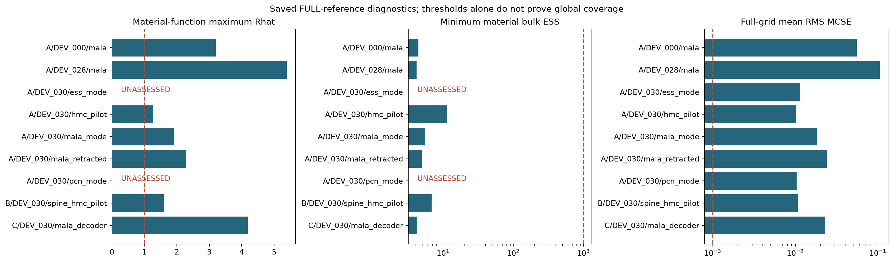
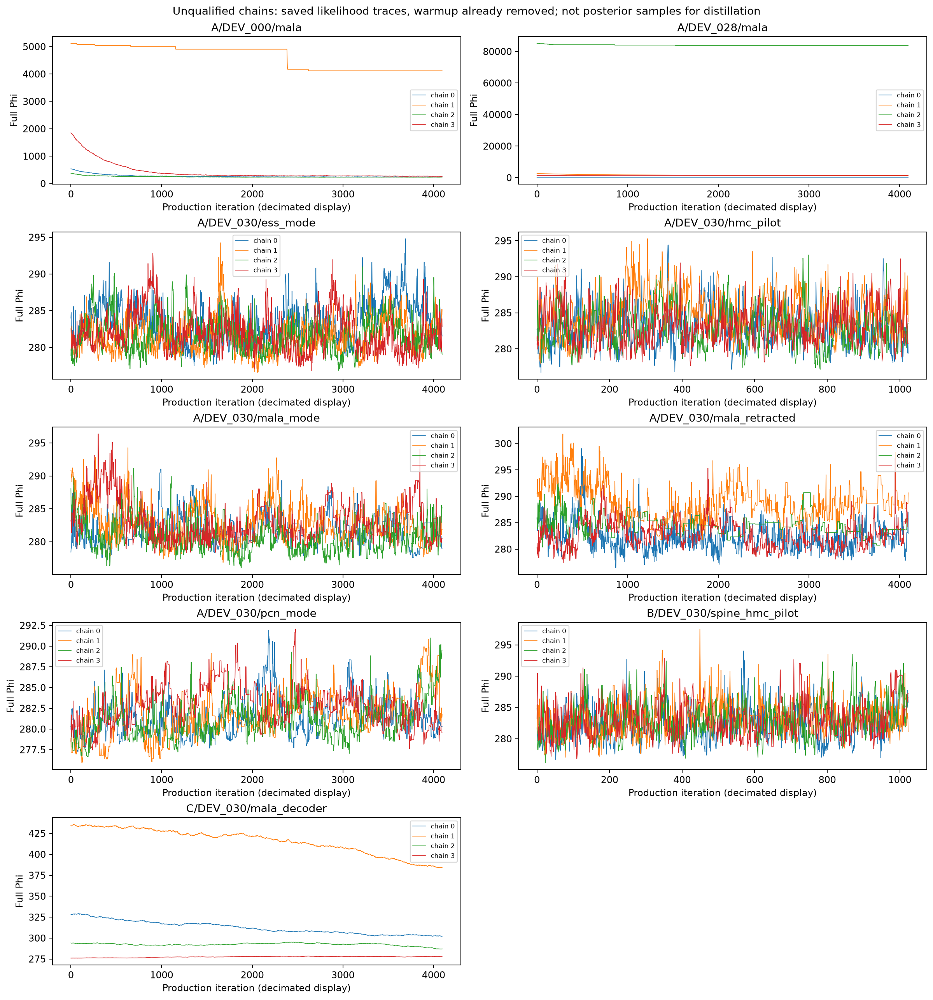
Gaussian 材料均值的实际负结果
32 个 development parent 全部保留。GN Gaussian 材料均值相对优化 anchor 的 complex MSE 差为 +0.006874938，配对 bootstrap 95% 区间 [0.0029612068355581297, 0.012014866591651126]。这是该具体近似的恶化证据，不能据此宣称 FULL Bayes 成像无益。
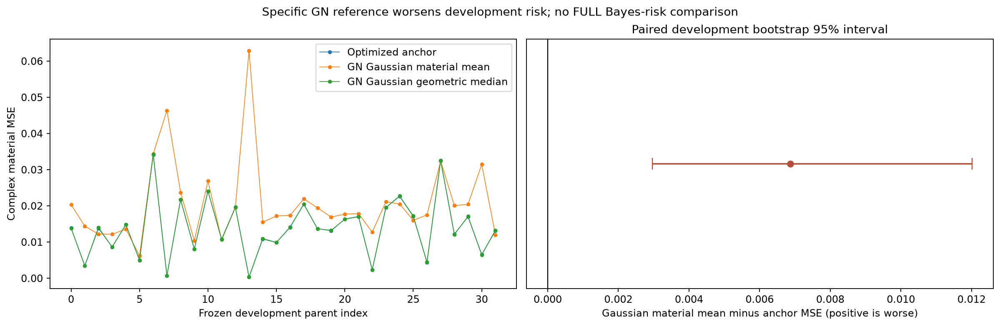
这里只读取此前独立离线评估的风险 JSON；渲染器不读取 GT。development 数据已暴露，不能称 locked 泛化。
强条件 GN reference 仍有明显非二次误差
40 组中 38 组重要性 ESS<2。小梯度不能修复整个 Gaussian 范围上的非二次偏差；decoder 和非 GN 曲率也有贡献，不能全部归因于 Maxwell feedback。
保留线性梯度项后的审计SLICE3_BOX 有数值收敛证据，目标仍是条件切片
最后两阶材料均值 RMS 差 8.4559e-10，logZ 差 6.6429e-08。固定其他 61 个 Gaussian 坐标和两个属性，并条件化于冻结 box。它没有计算原 FULL 弱 marginal，也没有给出 box 外质量或经过认证的 quadrature 误差。
原始阶数与限制几何结果是局部诊断
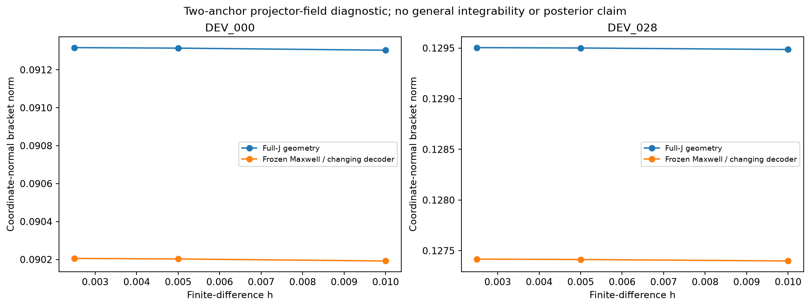
冻结 Maxwell、只改变 decoder 已重现大部分 bracket。这里没有证明一般不可积性、exact fiber 或 posterior 概率质量。
统一证据与实际计算费用
RUNNING。费用图使用已保存的 per-job solver RHS，不把累计阶段费用重复相加；不能据此补出等成本或 FULL posterior 声明。
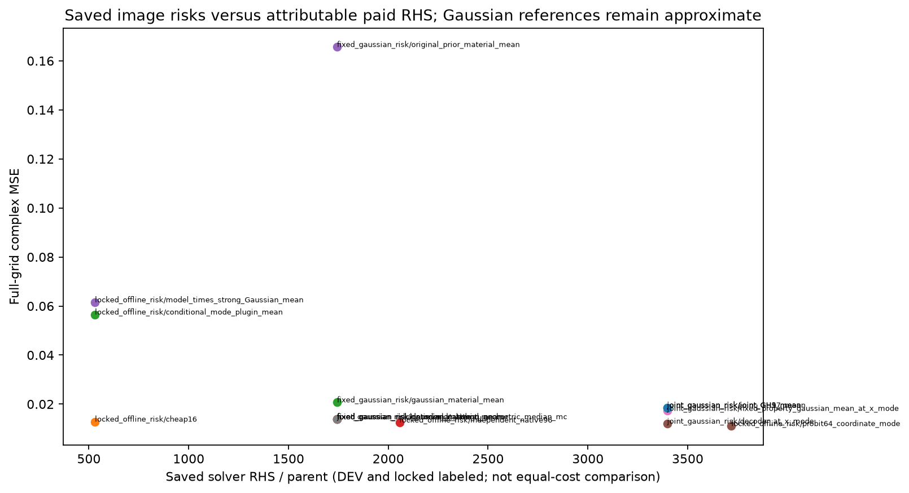
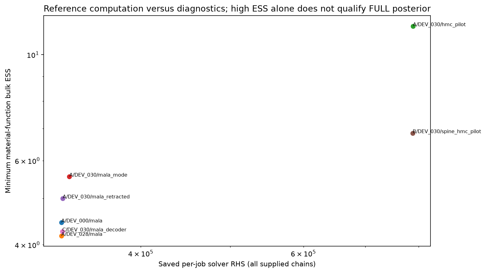
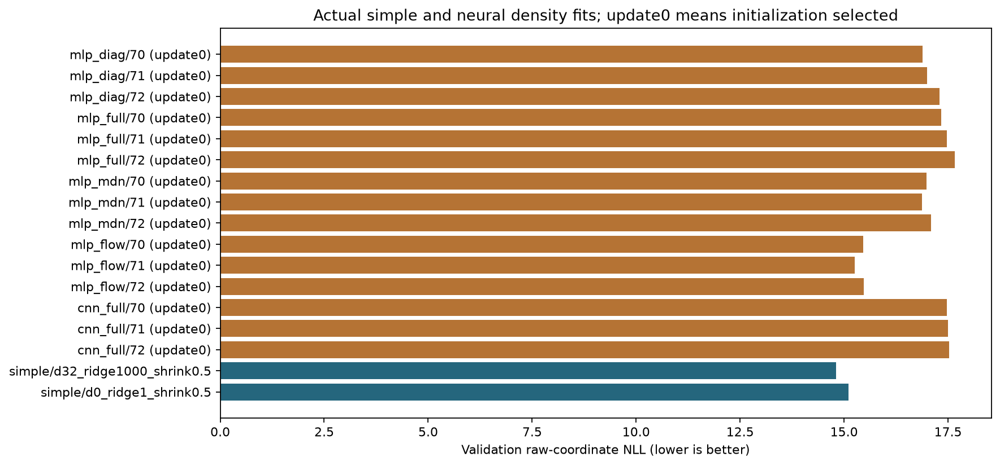
神经网络实际训练与初始化选择
已保存 15/15 份训练报告；其中 15 份由 validation NLL 选中 update 0。初始化被选中不构成学习增益；归一化密度、边缘 PIT 或高重要性 ESS 都不能建立 FULL posterior teacher。
简单 Gaussian control：d32_ridge1000_shrink0.5，validation raw-coordinate NLL 14.814；无条件 Gaussian 为 15.101。这是预测密度拟合证据，材料风险须单独评价。
Joint probit Gaussian 成像对照
保留历史 native-q anchor、新 probit coordinate mode、固定属性 Gaussian 均值、联合属性 GH5/9/17 Gaussian 均值与单独标记的不合格 IS。坐标 mode 的优化收益与 Gaussian averaging 的影响分别评价；GH refinement 只检验积分阶数，不验证 Gaussian 参考分布。
全部 32 DEV parent 风险、失败与配对区间独立 locked estimator-risk 记录
以下仅链接已经保存的独立离线风险摘要；不读取 locked truth，也不把 estimator-risk 改善升级为校准 posterior 或 teacher。
- D/LOCKED_IMAGE_RISK.json · SAVED_EVIDENCE
| Locked 全网格方法 / 指标 | 128 parent 平均 | 缺失 parent 数 |
|---|---|---|
| cheap16/full_grid/complex_MSE | 0.01284173 | 0 |
| cheap16/full_grid/complex_MAE | 0.04423065 | 0 |
| independent_native96/full_grid/complex_MSE | 0.01249381 | 0 |
| independent_native96/full_grid/complex_MAE | 0.04706289 | 0 |
| probit64_coordinate_mode/full_grid/complex_MSE | 0.01103092 | 0 |
| probit64_coordinate_mode/full_grid/complex_MAE | 0.04368586 | 0 |
| model_times_strong_Gaussian_mean/full_grid/complex_MSE | 0.06150212 | 0 |
| model_times_strong_Gaussian_mean/full_grid/complex_MAE | 0.1322227 | 0 |
| conditional_mode_plugin_mean/full_grid/complex_MSE | 0.05651695 | 0 |
| conditional_mode_plugin_mean/full_grid/complex_MAE | 0.1167463 | 0 |
| original_prior_material_mean/full_grid/complex_MSE | 0.1754207 | 0 |
| original_prior_material_mean/full_grid/complex_MAE | 0.2590502 | 0 |
| full_corrected_IS_unqualified_mean/full_grid/complex_MSE | 0.02400091 | 0 |
| full_corrected_IS_unqualified_mean/full_grid/complex_MAE | 0.06236964 | 0 |
| Locked 相对 baseline 的全网格 MSE 差 | 平均差 | 配对 bootstrap 95% 区间 |
|---|---|---|
| cheap16_minus_independent_native96/full_grid/complex_MSE | 0.0003479166 | [-0.0009416786657710628, 0.00157516425959631] |
| cheap16_minus_probit64_coordinate_mode/full_grid/complex_MSE | 0.001810811 | [0.0006093706515573898, 0.0029695145362871383] |
| cheap16_minus_original_prior_material_mean/full_grid/complex_MSE | -0.162579 | [-0.17690421122193747, -0.14856915432688253] |
| independent_native96_minus_cheap16/full_grid/complex_MSE | -0.0003479166 | [-0.0015751642595963108, 0.0009416786657710605] |
| independent_native96_minus_probit64_coordinate_mode/full_grid/complex_MSE | 0.001462895 | [0.0012596959272699283, 0.0016693022076087723] |
| independent_native96_minus_original_prior_material_mean/full_grid/complex_MSE | -0.1629269 | [-0.1776854788955942, -0.1483539233138912] |
| probit64_coordinate_mode_minus_cheap16/full_grid/complex_MSE | -0.001810811 | [-0.002969514536287139, -0.0006093706515573905] |
| probit64_coordinate_mode_minus_independent_native96/full_grid/complex_MSE | -0.001462895 | [-0.0016693022076087723, -0.0012596959272699283] |
| probit64_coordinate_mode_minus_original_prior_material_mean/full_grid/complex_MSE | -0.1643898 | [-0.1791124375439388, -0.14982356103557068] |
| model_times_strong_Gaussian_mean_minus_cheap16/full_grid/complex_MSE | 0.04866039 | [0.04110418886004124, 0.056467232292052236] |
| model_times_strong_Gaussian_mean_minus_independent_native96/full_grid/complex_MSE | 0.0490083 | [0.04127260527055702, 0.05686732211436852] |
| model_times_strong_Gaussian_mean_minus_probit64_coordinate_mode/full_grid/complex_MSE | 0.0504712 | [0.04278733948580851, 0.05828649816152253] |
| model_times_strong_Gaussian_mean_minus_original_prior_material_mean/full_grid/complex_MSE | -0.1139186 | [-0.13199950538105143, -0.09619891309650198] |
| conditional_mode_plugin_mean_minus_cheap16/full_grid/complex_MSE | 0.04367522 | [0.035916826532287636, 0.05194419161324122] |
| conditional_mode_plugin_mean_minus_independent_native96/full_grid/complex_MSE | 0.04402314 | [0.03609175593506417, 0.05228036152155144] |
| conditional_mode_plugin_mean_minus_probit64_coordinate_mode/full_grid/complex_MSE | 0.04548603 | [0.03764289361992613, 0.05376589530332409] |
| conditional_mode_plugin_mean_minus_original_prior_material_mean/full_grid/complex_MSE | -0.1189037 | [-0.13745872387226882, -0.10103850930211344] |
| original_prior_material_mean_minus_cheap16/full_grid/complex_MSE | 0.162579 | [0.14856915432688253, 0.17690421122193747] |
| original_prior_material_mean_minus_independent_native96/full_grid/complex_MSE | 0.1629269 | [0.1483539233138912, 0.1776854788955942] |
| original_prior_material_mean_minus_probit64_coordinate_mode/full_grid/complex_MSE | 0.1643898 | [0.14982356103557068, 0.1791124375439388] |
| full_corrected_IS_unqualified_mean_minus_cheap16/full_grid/complex_MSE | 0.01115918 | [0.00910491547298226, 0.013604593669019296] |
| full_corrected_IS_unqualified_mean_minus_independent_native96/full_grid/complex_MSE | 0.0115071 | [0.009159246838068192, 0.014131152121077661] |
| full_corrected_IS_unqualified_mean_minus_probit64_coordinate_mode/full_grid/complex_MSE | 0.01296999 | [0.010611940236838025, 0.015635355007358236] |
| full_corrected_IS_unqualified_mean_minus_original_prior_material_mean/full_grid/complex_MSE | -0.1514198 | [-0.16632239494446802, -0.13712456920613614] |
Locked 实际风险与图像导航
全部 128 parent 的已保存离线风险；只链接现成图像，不读取 locked truth 或数组。
固定前四 locked parent · epsilon real

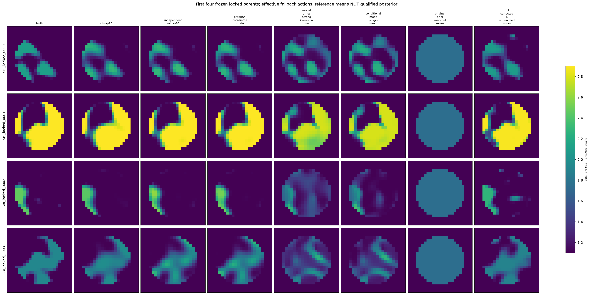
固定前四 locked parent · epsilon imag

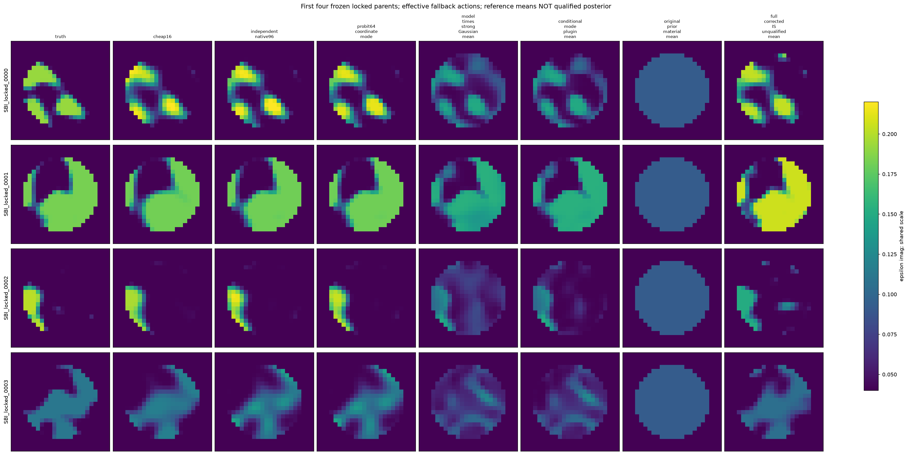
冻结四 parent 的 joint Gaussian 图像
固定 DEV_000 / 028 / 030 / 026，Re 与 Im 各自共享色标。Gaussian modulus SD 明确未校准；不是 component SD、可信区间或 FULL posterior 不确定度。
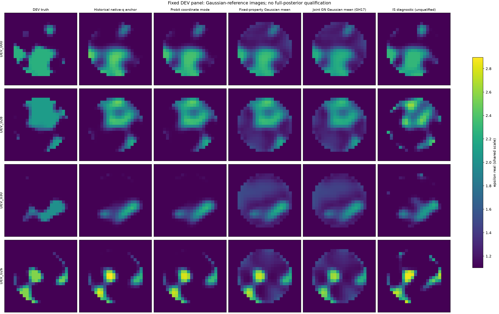
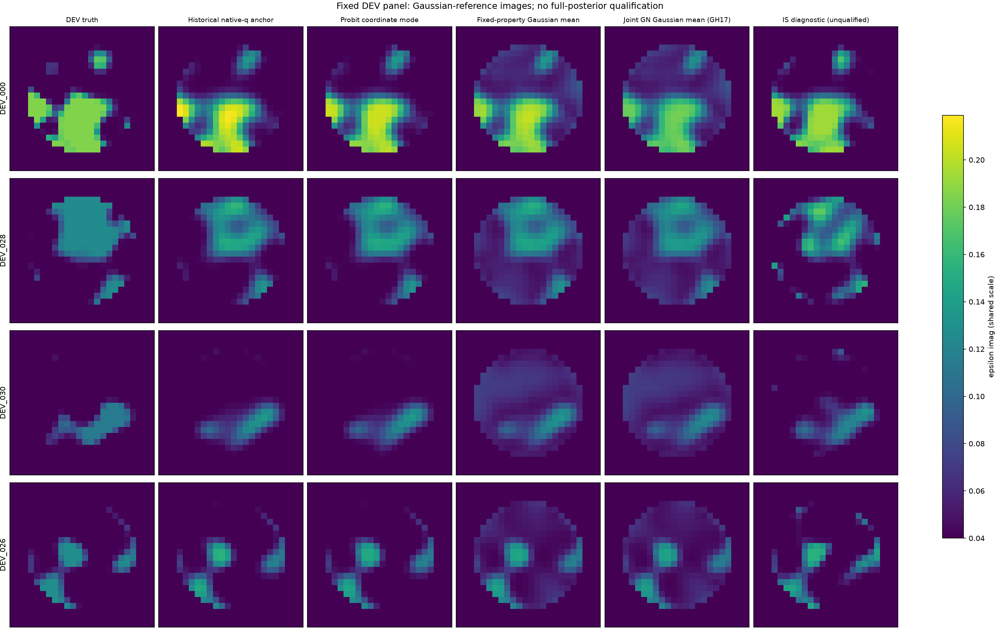
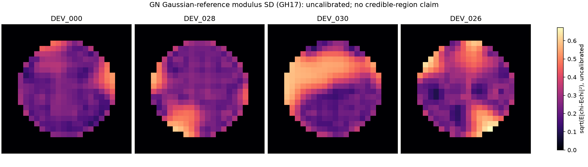
原始说明与证据
- START_HERE.md
- RESEARCH_REPORT_ZH.md
- THEORY_AND_ALGORITHM.md
- POSTERIOR_REFERENCE_AUDIT.md
- GO_NO_GO.md
- configs/PROTOCOL.json
- RESOURCE_LEDGER.json
- RESULTS_AND_METRICS.json
- B/GN_DEPARTURE_AUDIT.json
- B/GAUSSIAN_IMAGE_RISK.json
- B/JOINT_GAUSSIAN_IMAGE_RISK.json
- B/slice3/RESULTS.json
- D/simple_density/RESULTS.json
- AUDIT/neural_training/ACTUAL_TRAINING_REVIEW.json
- D/LOCKED_IMAGE_RISK.json
- C/jobs/geometry_projector_DEV000_DEV028/RESULTS.json
- AUDIT/MEMORY_INTERRUPTION_RECOVERY.json
- AUDIT/MEMORY_RECOVERY_REVIEW.md
原始 chains、端点和 LU 留在原独立目录；没有在本渲染步骤制作新 Release、上传数组或执行推送。网页可达性与科学资格分别审查。